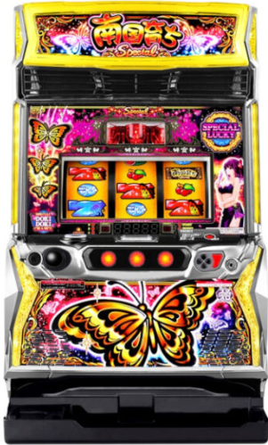

目次

L南国育ち SPECIALL NANGOKU SODACHI SPECIAL ｜ アムテックス
設定6 機械割
110.4%
設定1 機械割
97.5%
天井
799G+α
AT純増
約3.0〜6.0枚/G
L南国育ち SPECIAL ボーナス確率・機械割
5段階設定（設定1・2・4・5・6）。設定6の機械割は110.4%。
| 設定 | ボーナス初当り | 機械割 |
|---|---|---|
| 設定1 | 1/299.7 | 97.5% |
| 設定2 | 1/296.2 | 98.6% |
| 設定4 | 1/276.3 | 102.6% |
| 設定5 | 1/269.1 | 105.0% |
| 設定6 | 1/262.4 | 110.4% |
ボーナス獲得枚数
| ボーナス | 獲得枚数 |
|---|---|
| 青7BIG / 赤7BIG | 210枚以上 |
| REG | 80枚以上 |
期待収支（8000G消化時）
| 設定 | 差枚数 | 期待収支（等価） | 期待収支（5.6枚交換） |
|---|---|---|---|
| 設定1 | −600枚 | −2,400pt | −3,360pt |
| 設定2 | −336枚 | −1,344pt | −1,882pt |
| 設定4 | +624枚 | +2,496pt | +1,783pt |
| 設定5 | +1,200枚 | +4,800pt | +3,429pt |
| 設定6 | +2,496枚 | +9,984pt | +7,131pt |
※ 差枚数 = (機械割 − 100%) × 8000G × 3枚。等価: 1pt = 4.0枚 / 5.6枚交換: 1pt = 5.6枚
L南国育ち SPECIAL 小役確率
小役確率の詳細は調査中です。判明次第更新します。
| 小役 | 確率 | 備考 |
|---|---|---|
| スイカ | 約1/99.9 | 全設定共通の可能性あり |
| その他 | 調査中 | — |
L南国育ち SPECIAL 設定判別ポイント
1
ボーナス初当り確率
設定1（1/299.7）→ 設定6（1/262.4）と約1.14倍の差。長時間打つほど設定差が表れます。
2
ハルルナボイス（ボーナス終了時）
ボーナス終了時に発生するハルルナボイスが設定を示唆します。複数パターンが存在し、特定パターンは高設定確定。
3
スイカ規定回数
スイカ9回目で100%ボーナス当選となる特殊仕様。スイカ出現をカウントし、規定回数到達タイミングを確認しましょう。
L南国育ち SPECIAL 天井・リセット
| 項目 | 内容 |
|---|---|
| 通常天井 | 799G+αでボーナス当選 |
| リセット天井 | 500G+αに短縮 |
| 天井恩恵 | ボーナス当選 |
やめ時の目安：ボーナス後・飛翔モード終了後にやめ。朝一リセット狙いは500G+αまでフォロー。
L南国育ち SPECIAL 設定変更・朝一恩恵
| 項目 | 設定変更時 | 電源OFF→ON |
|---|---|---|
| 天井 | 500G+αに短縮 | 前日の状態を引き継ぎ |
| モード | チャンスモード以上が70%以上で選択 | 前日の状態を引き継ぎ |
朝一のポイント：設定変更後は天井が500G+αに短縮され、チャンスモード以上が高確率で選択されるため、リセット台は積極的に狙い目です。
設定判別ツール
総回転数とボーナス回数を入力すると、ポアソン尤度に基づき各設定の確率を算出します。
L南国育ち SPECIAL よくある質問
L南国育ち SPECIALの設定6機械割は？
設定6の機械割は110.4%です。5段階設定（1・2・4・5・6）で、設定4（102.6%）から機械割100%を超えます。
L南国育ち SPECIALの天井は何ゲームですか？
通常天井は799G+αでボーナス当選です。設定変更後は500G+αに短縮されます。朝一はチャンスモード以上が70%以上で選択されるため、リセット狙いが有効です。
L南国育ち SPECIALの設定判別で重要な指標は？
ボーナス終了時のハルルナボイスが設定示唆として機能します。また、スイカ規定回数9回目で100%ボーナス当選となるため、スイカ出現率のカウントも重要です。初当たり確率にも設定差があります。
L南国育ち SPECIALのやめ時はいつですか？
ボーナス後・飛翔モード終了後にやめが基本です。朝一リセット狙いの場合は500G+αまでフォローしてください。通常時は799G+αが天井となります。
L南国育ち SPECIALの設定は何段階ですか？
5段階設定（設定1・2・4・5・6）です。設定3は存在しません。設定1（97.5%）から設定6（110.4%）まで段階的に機械割が上がります。
L南国育ち SPECIALの飛翔モードとは？
ボーナス連チャンの核となるモードです。通常の飛翔モードはループ率約84%・純増約3.0枚/G、上位の超飛翔モードはループ率約93%・純増約6.0枚/Gで大量出玉のチャンスです。